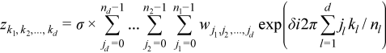
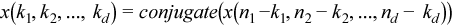
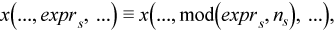
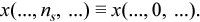

Intel® oneAPI Math Kernel Library Developer Reference - Fortran
The general form of a discrete Fourier transform is

for kl = 0, ... nl-1 (l = 1, ..., d), where σ is a scale factor, δ = -1 for the forward transform, and δ = +1 for the backward transform.
The Intel® oneAPI Math Kernel Library implementation of the FFT algorithm, used for fast computation of discrete Fourier transforms, supports forward transforms on input sequences of two domains, as specified by theDFTI_FORWARD_DOMAIN configuration parameter: general complex-valued sequences (DFTI_COMPLEX domain) and general real-valued sequences (DFTI_REAL domain). The forward transform maps the forward domain to the corresponding backward domain, as shown in Table "Correspondence of Forward and Backward Domain".
The conjugate-even domain covers complex-valued sequences with the symmetry property:

where the index arithmetic is performed modulo respective size, that is,

and therefore

Due to this property of conjugate-even sequences, only a part of such sequence is stored in the computer memory, as described in DFTI_CONJUGATE_EVEN_STORAGE.
Forward Domain |
Implied Backward Domain |
|---|---|
Complex (DFTI_COMPLEX) |
Complex (DFTI_COMPLEX) |
Real (DFTI_REAL) |
Conjugate-even |
DFTI_FORWARD_DOMAIN does not have a default value. Set it explicitly by calling the DftiCreateDescriptor function.
To better understand usage of the DFTI_FORWARD_DOMAINconfiguration parameter, you can refer to these examples in your Intel® oneAPI Math Kernel Library directory:
./examples/dftf/source/basic_sp_complex_dft_1d.f90
./examples/dftf/source/basic_sp_real_dft_1d.f90